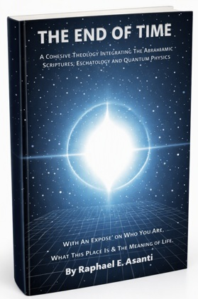

by Raphael Asanti
Discover how modern quantum theory reshapes everything we assume about God, free will, and reality itself.

“A rare work that treats both physics and theology with seriousness.” — Early Reader
“Clear, thoughtful, and conceptually rigorous.” — Beta Reviewer
The End of Time explores the human search for meaning at the intersection of theology and quantum theory. Many readers arrive here asking whether modern physics changes how we understand God, creation, and the meaning of life.
Excerpt from the opening chapter:
The material universe is not a giant, accidental empty room that goes on forever. It is a closed box. Think of it like a high-tech, highly monitored incubator built for one specific purpose: growing human souls. The Creator did not design an open-ended playground. Instead, He built a temporary, completely controlled "clean room" to isolate the experiment and test human free will with absolute precision.
This preview offers a glimpse into the book’s core theme: the intersection of theology, cosmology, and the structure of reality.
From later in the book:
You are not a body. You are a soul. Your soul is the real, permanent you. It is a living recording device. Every single word you have ever spoken and every deed you have ever done is saved on your soul. Your soul is your true identity as an individual. Your physical body is just an interface. It is like an avatar or a spacesuit. Whether your body is made of light, flesh, or cardboard and Styrofoam, it does not matter. The body is just the machine you use to touch, experience, and interact with this physical world.
This passage expands on the book’s central argument: that time, identity, and reality are not sequential experiences but structural components of a single unified system.